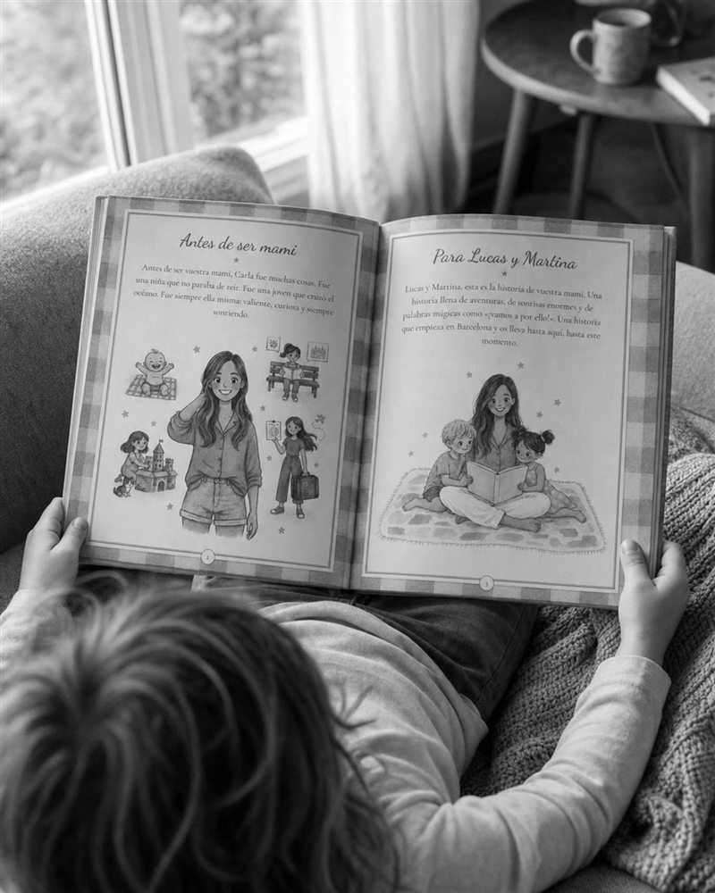

Un bebé llega a una familia llena de historias. Convertimos la de sus padres o la de sus abuelos en un cuento personalizado ilustrado en acuarela, para que cuando crezca descubra de dónde viene.
Crear su libro →
Ahora viven entre biberones y pañales. Pero antes de que llegara el bebé tuvieron toda una vida que algún día le encantará conocer. Gira las tarjetas:
Ideal como regalo de los abuelos o de los amigos: la historia de mamá y papá, contada para su bebé.
Para un nuevo nieto: los abuelos cuentan su vida para que el bebé la descubra cuando crezca.
Un regalo de bautizo o de primer cumpleaños que no se queda pequeño como la ropa.
De quien tú elijas: de sus padres, de sus abuelos o de cualquier persona de la familia. El libro está escrito para que el bebé la descubra cuando crezca.
Sí. Es un regalo que no se queda pequeño ni se pasa de moda, y que el niño guardará toda la vida.
Claro. Muchos abuelos lo regalan con su propia historia, para que su nuevo nieto los conozca de verdad.
El libro tarda entre 2 y 3 semanas desde que nos contáis la historia.